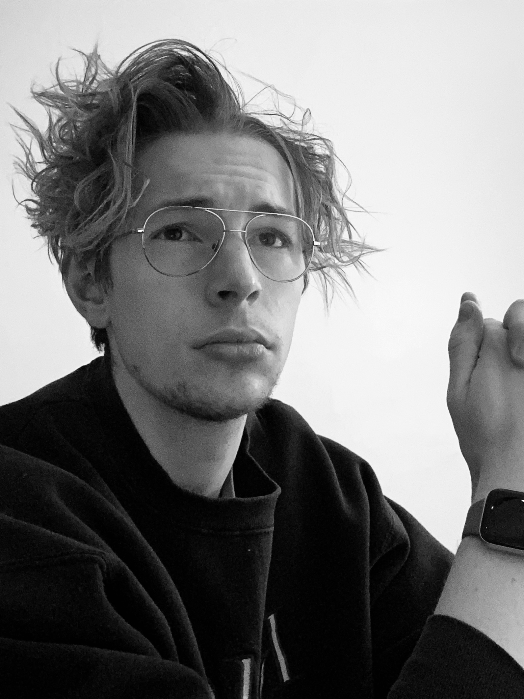

Kristoff aspires to be a Renaissance man, delving into the realms of philosophy, poetry, art, history, language, psychology, physics and engineering.
Chronologically, Kristoff has lived in Montreal, Petawawa, Waterloo, Hamilton, Waterloo, Zurich, Waterloo, Sunnyvale, Waterloo, San Jose, San Francisco and Boulder.
After graduating from the University of Waterloo's Nanotechnology Engineering program in 2019, Kristoff began working at Apple. He is a Camera Systems Engineer at the American tech giant, currently working remotely out of his rented duplex in Boulder, Colorado.